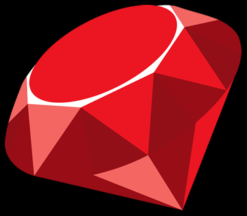

Portfolio
ABOUT
Kenzie Lim. 17. Male. Ngee Ann Polytechnic. In Diploma in IT.
Year 1. Quiet. Weird. Noisy. Overthinker. Dreamer.
Aspiring Application Developer. Inspired Game Developer.
Python. Python + Raspberry Pi.
In the process... Ruby. HTML+CSS. Javascript.
Ubuntu. Windows 8, 10. Windows Office.
Github. Atom. Eclipse.
TIMELINE
-BORN- 2000-
Born to live to die again.
-THE CHOICE- 2006-
A totally unrelated topic. A choice between the Arts - Wushu & Piano.
-PRIMARY SCHOOL- 2007 - PIONEER PRIMARY SCHOOL-
I was top in...
-THE SWITCH ("DSA")- 2009 - RULANG PRIMARY SCHOOL-
Wait what?!
Anddd...I am last in class now...
Well, at least Wushu's going well...
Medals & Trophies throughout the years
Wushu Vice-Captain
Edusave Award x2
-SECONDARY SCHOOL- 2013 - JURONG SECONDARY SCHOOL-
Sports Class--
The Dawn of Atheletics
Triple Double Stream
Medals & Trophies throughout the years as well
EAGLES award x1
Edusave Award x1
Arts --
2014 Assignment -
Rendition of Famous Paintings (Starry, Starry night)
VIP Gift -
Guest-of-Honor of Prize-Giving Ceremony 2015
-TERTIARY EDUCATION - 2017(present) Ngee Ann Polytechnic-
Diploma in IT
Python. Operating Systems Fundamentals (Windows and Linux(Ubuntu)). Enterprise Information Systems.
Squash. Orion.
Stritwise Final Battle 2017.
-TO THE FUTURE AND BEYOND-
.
.
.
:)
WORK
2017 - Tunity Technologies Pte Ltd.
Helped out with the software for the trays for recently opened
Yishun Park Hawker Centre by Timbre.
Currently in the process of writing a ruby code...
